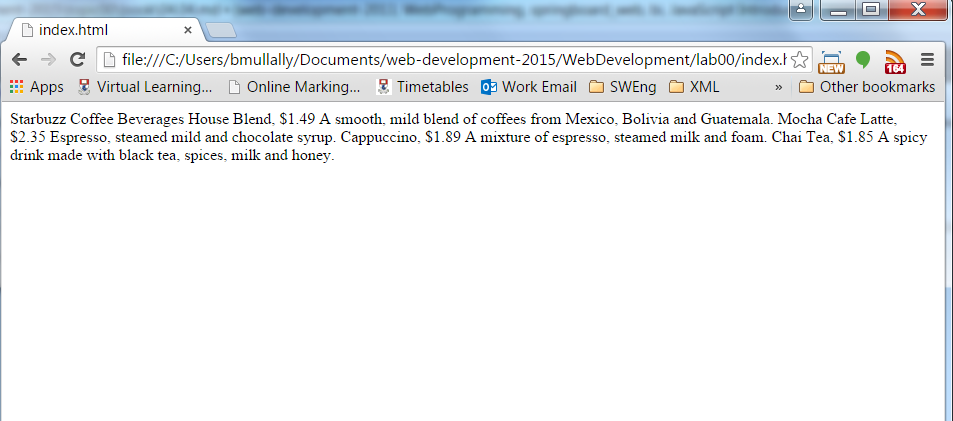
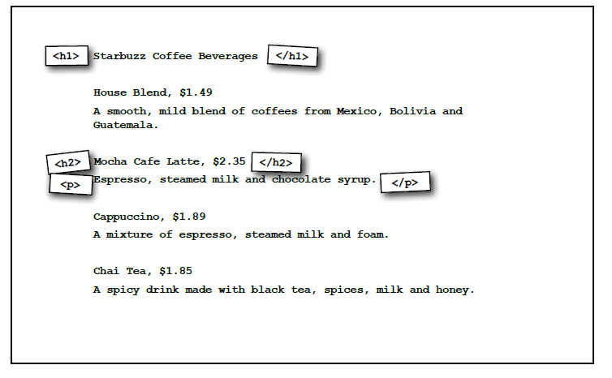
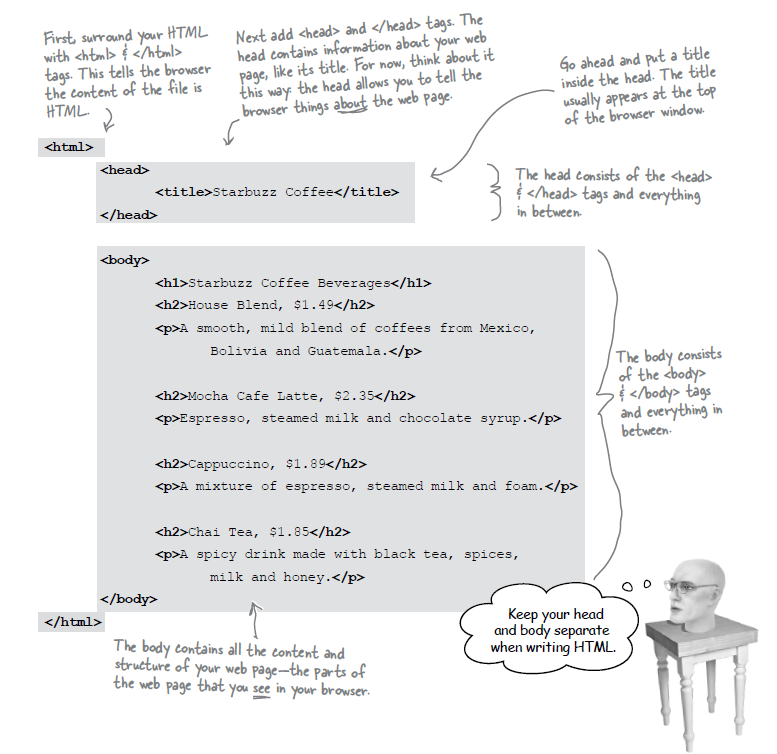
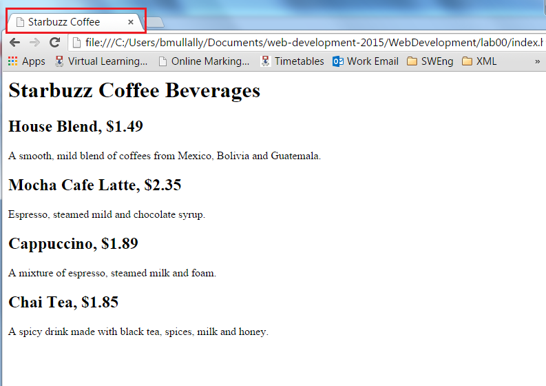

Objectives
This lab will firstly introduce you to the tools we will use during the web development module and secondly introduce you to creating, editing, saving and displaying a web page.
Introduction Project
You will create a simple web page for the Starbuzz Coffee shop. They have made a name for itself as the fastest growing coffee shop around. If you’ve seen one on your local corner, look across the street—you’ll see another one. In fact, they’ve grown so quickly, they haven’t even managed to put up a web page yet…and therein lies your big break: By chance, while buying your Starbuzz Chai Tea, you run into the Starbuzz CEO… who asks for your help...

These are the steps you will carry out:

To prepare we will create a folder structure to store our work.
If you are working on a PC in the IT lab, create a new folder on either your G drive/WIT OneDrive or on your usb drive and name the folder WebsiteDevelopment1. Inside that folder create another folder called Week01. You will be creating a new folder for each week this semester. Inside that folder, create a folder for this lab, called Lab00.
First on the list of tasks is to create a html file in a text editor. To start with, we're going to use the Notepad application. In a few steps, you'll get to choose a different text editor to work with; but for now, open Notepad.
In Notepad, choose New File from the File menu, and a new blank page should appear. When you open a new file you must tell Notepad what you want to name it. Click Save on the File menu and name the file index.html, save it into the Lab00 folder. Make sure you change the file type to 'All Files'.
Second on the list of tasks we type in the menu that the CEO provided to us on the napkin.
To do this we click on the index.html file we just created. In that page we type the following:
Starbuzz Coffee Beverages
House Blend, $1.49
A smooth, mild blend of coffees from Mexico, Bolivia and Guatemala.
Mocha Cafe Latte, $2.35
Espresso, steamed mild and chocolate syrup.
Cappuccino, $1.89
A mixture of espresso, steamed milk and foam.
Chai Tea, $1.85
A spicy drink made with black tea, spices, milk and honey.Third on the list of tasks is to save the file. Click on the File menu in Notepad and choose Save.
Your file should look like this:

Web Browser
For this module we will be using Google's Chrome as our chosen Web Browser, it should be on all pc's in the IT building and if you are using your laptop you can download it here
Open your Chrome web browser, it should be on the desktop or in the programs menu.
To open a file in Chrome you press Ctrl+o , this is the shortcut using the letter 'o' for Open. An Open dialog box appears, using this you navigate to your WebsiteDevelopment1 folder, go to the Week01/Lab00 folder and click on the index.html file. Click Open.
Your web page in the Chrome browser should look like this:

Success! you have got the page loaded in the browser, although the results are a little..uh..unsatisfying. But that's just because all you've done so far is go through the mechanics of creating a page and viewing it in the browser. So far you have only typed the content of the web page.
HTML gives you a way to tell the browser about the structure of your page. What's structure? It is a way of marking up your text so that the browser knows what's a heading, what text is a paragraph, what text is a subheading and so on. Once the browser knows a little about the structure, it can display your page in a more meaningful and readable manner.
So let's add some structure:

The tags shown in the image above are used to place structure to the content we typed. So we want to identify which content is a heading, which is a subheading and which is a paragraph.
If we first identify the heading, it is clearly the first line in our content. Starbuzz Coffee Beverages. Next a subheading could be House Blend, or Mocha Cafe Latte and so on. Next a paragraph could be A smooth, mild blend of coffees from Mexico, Bolivia and Guatemala.

Using the tags we surround each piece of content with an opening and closing tag as in the following example:

Save your work in Notepad, click on File and Save.
Now lets open/refresh our web page in Chrome.
If you closed Chrome since you viewed your web page then open it again, press Ctrl+o and choose the index.html file again.
If you still have the index.html file open in Chrome then simply press the refresh button on Chrome or press F5 (Windows)

It is nice to be able to see your html code in Notepad and see the web browser window at the same time. You can do this by spliting your screen. In Windows while you have the Notepad window open press the Windows button and the left hand arrow button on the keyboard. This will move the Notepad window to the left hand side of your screen. Now go to the Chrome page and press the Windows button and the right hand arrow button on the keyboard. This will put the Chrome window to the right half of your screen. Something like this:

More HTML
You now have an HTML file with markup - does that make a web page? Almost.
You have been introduced to the following tags in the lectures
<html> <head> <title> and <body>
For the moment we need to use these tags to make this a proper HTML page...
The content we have included so far should all be contained within the open <body> tag and the close </body> tag.
We must add a little extra into the <head> and <title> tags

Save your work in Notepad, click on File and Save.
Your index.html code should look like this:

Now refresh the Chrome browser to see the changes.

You can see the title of the tab in Chrome now says Starbuzz Coffee
Congratulations! You have now completed your first web page.
Choosing a text editor
There are several options when it comes to choosing a text editor, many of which make it easier to write your HTML code. It's up to you which one you choose - try out a few of the options that are installed on the PCs in the lab you are in now. Copy in the HTML that you have written so far and see how it looks.
- Brackets
- Notepad++
- Sublime Text
You can download and install any of these on your computer to try at home.
Save your work, often!
It is important to regularly save your work, this might seem obvious but everyone loses work at some point in the semester and you'd be surprised how many say "I just forgot to save it!"
In sublime if you go to close your files it will prompt you to see if you want to save your work, however better practice is to always save after first creating a new file so that you name it correctly and then as you edit your code you should continually save your work.
Queries and Questions
There is a lot to take in and become familiar with while learning web development. You will always have questions, so please do ask your tutor; there is never a stupid question.
For additional support you can use the Internet although there are so many sites the ones we recommend are:
Exercise 1:
Explore this reference site here:
In particular, locate the <tags> you have used in this lab in the Element Reference section:
For example this is the <p> element:
The text is very technical - but some of it will start to make sense over the next few weeks.
Exercise 2:
At the end of this page:
is a See Also section, which suggests two elements:
<hr><br>
Look up these in the reference, and try them out on the page you have designed.